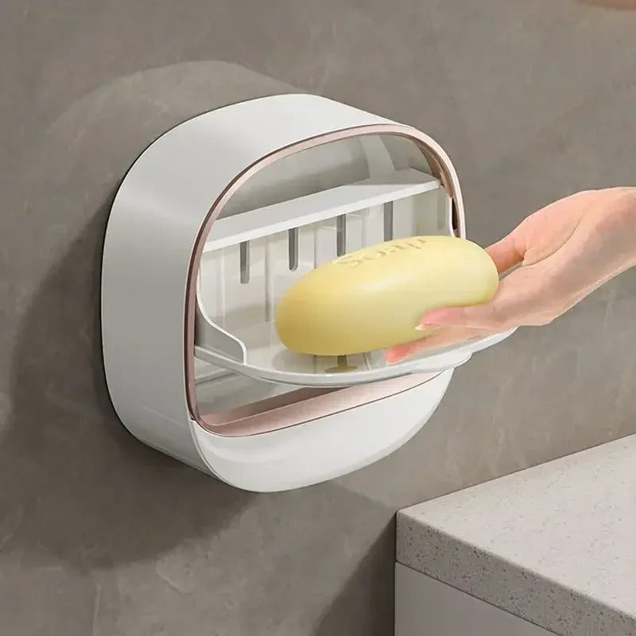
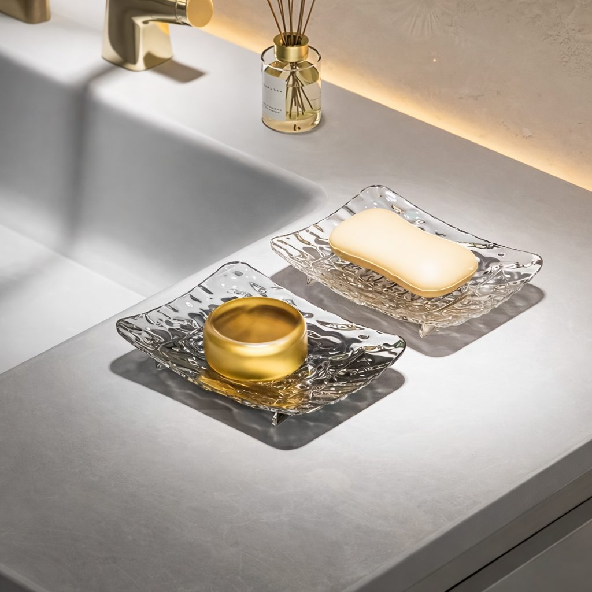

Black spots in the corners, slimy soap dishes and musty smells are common in the monsoon. Here is how to prevent bathroom mould in humid cities like Karachi and Lahore.

When the monsoon reaches Pakistan, humidity climbs past eighty percent for weeks. In coastal Karachi it barely drops all summer. Bathrooms suffer first. Black spots appear in tile grout and ceiling corners, soap turns into a sticky mess in its dish, towels never fully dry and the whole room starts to smell damp. Left alone, mould spreads to walls and can trigger allergies and asthma, particularly in children and elders.
Mould prevention is mostly about one thing: water should never sit still. This plan explains how to dry the room, fix the hot spots and choose accessories that drain rather than collect water.
Mould needs moisture, warmth and something to feed on, such as soap scum or dust. Bathrooms in Pakistani homes have all three, especially when the window is small and the exhaust fan is weak or missing. Every hot shower adds steam, and in monsoon season there is no dry outside air to carry it away. The goal is to cut moisture quickly after each use and keep surfaces clean enough that mould has nothing to eat.
Run the exhaust fan during every shower and for at least fifteen minutes afterwards. If the fan is clogged with dust, unscrew the grille and clean it, because a dirty fan moves far less air. Keep the bathroom door open when no one is using it so air can move through. During dry breaks between rain spells, open the window fully. If there is no fan at all, consider having one installed; it is the single most effective step.
A small rubber squeegee takes thirty seconds and removes most water from tiles and glass. Wipe the sink area and taps with a microfibre cloth. It sounds tedious, but it becomes a habit within a week and dramatically reduces both mould and hard water stains. Hang the cloth to dry, not in a heap on the counter.
Soap dishes and holders without drainage are mould factories. Look for designs that either drain into the sink, lift the soap off the surface, or have a lid that keeps splash water out. Wall-mounted pieces are better than counter-top ones because water does not pool underneath. Drill-free suction shelves keep bottles off the bath ledge where water collects. Before the rains, many families replace their old dishes with drainable ones from a bathroom essentials collection and notice the difference within days.
Spend fifteen minutes once a week on these tasks:
For stubborn black spots, a mild bleach solution works, but keep the room ventilated and never mix bleach with other cleaners.
Towels left folded on a rail stay damp all day in humid weather. Hang them spread out, and wash them more often than usual during the monsoon. Choose quick-dry or microfibre bath mats instead of thick cotton ones, which hold water for hours. A shower curtain should be pulled fully closed after use so its folds can dry, and washed monthly.

Sometimes mould keeps returning because of a hidden leak. Look for peeling paint on the wall outside the bathroom, a damp smell in the cupboard below, or cracked silicone around the tub or basin. Re-seal edges with anti-fungal silicone. Seepage from the roof during heavy rain may need waterproofing work, which is best done before the next monsoon arrives.
You cannot stop the monsoon, but you can stop mould from moving in with it. Ventilate every time, wipe surfaces dry, swap old soap dishes for drainable wall-mounted ones, and keep a short weekly routine. A dry bathroom is a healthier bathroom, and it will still look fresh when the rains finally end in September.